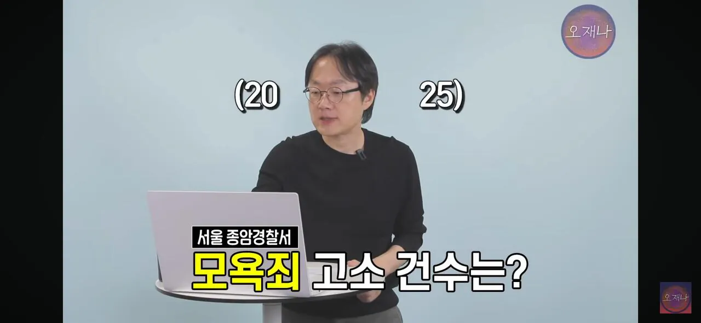
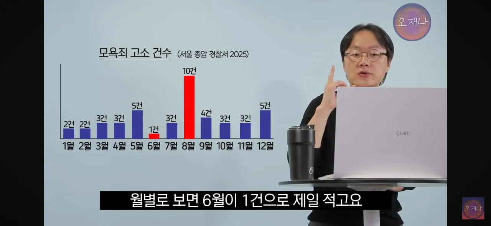
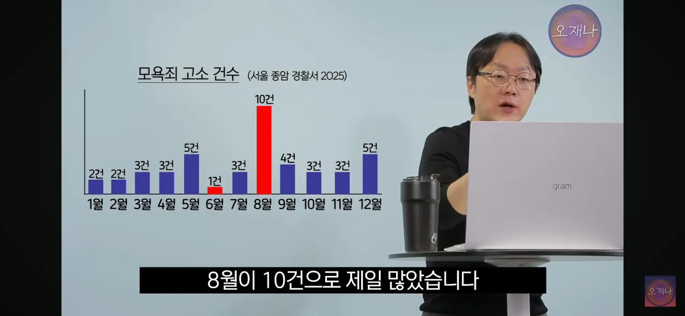
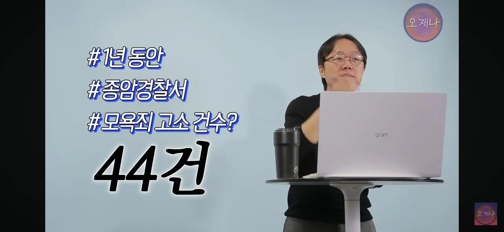
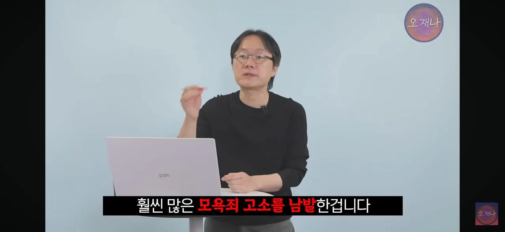
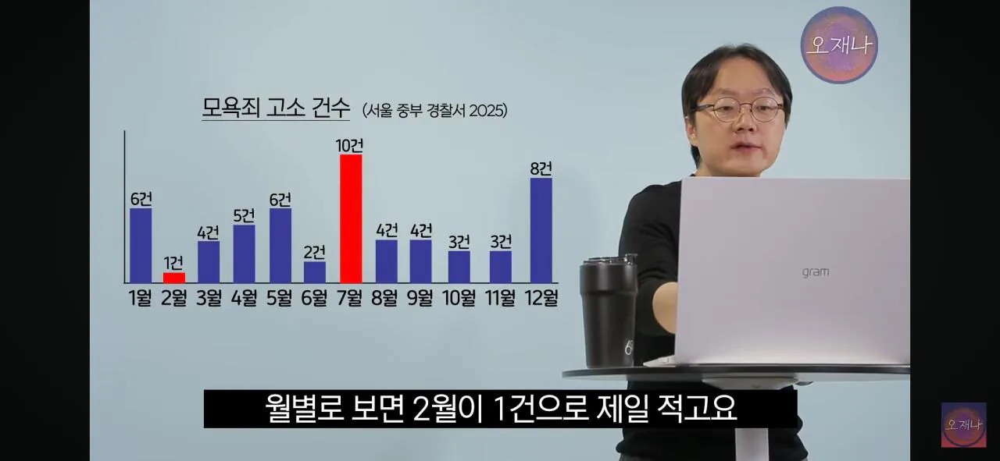
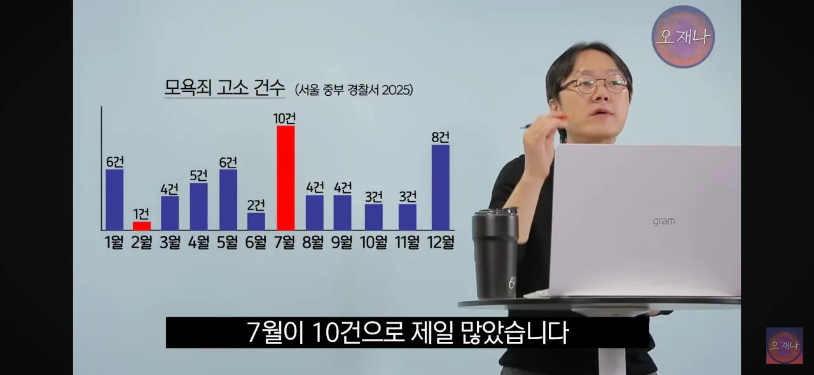
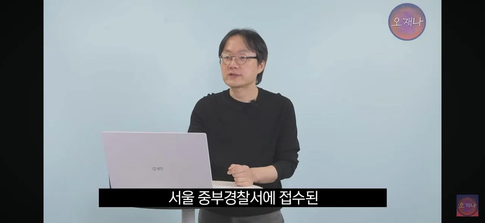
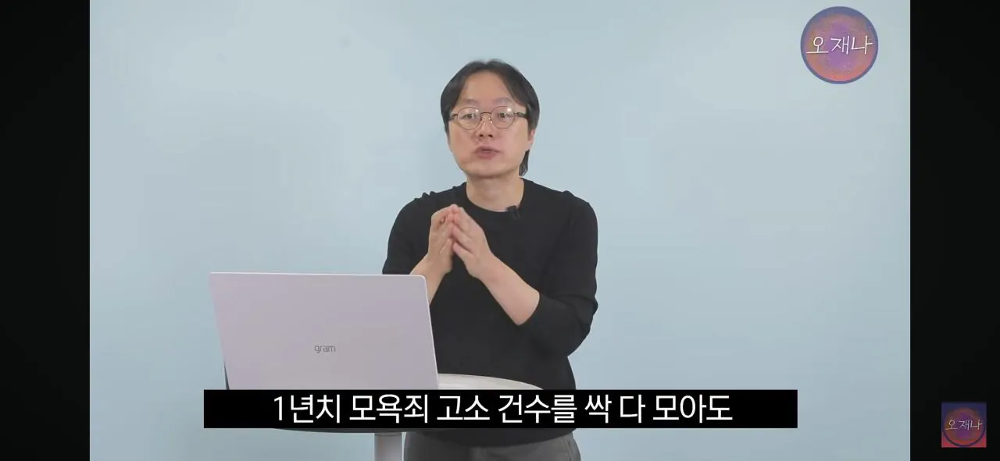
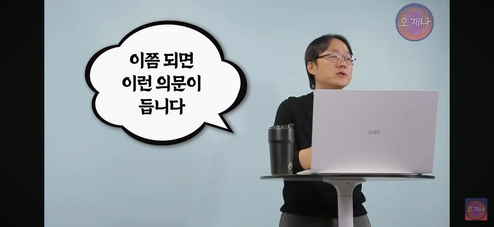
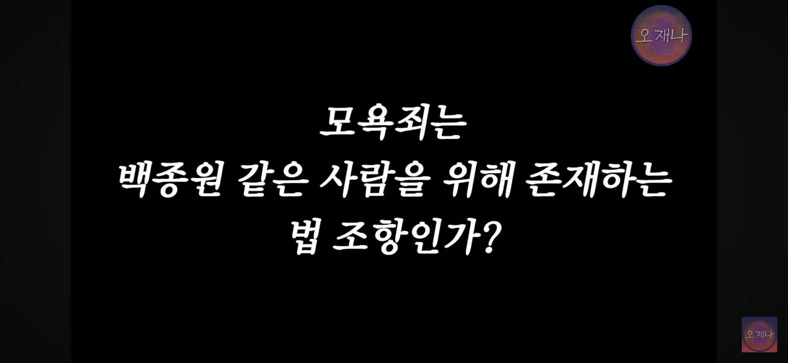
김재환피디의 취재로는 다음과 같다고 합니다











김재환피디의 취재로는 다음과 같다고 합니다
모욕죄, 사실적시명훼, 통매음은 폐지하는게 맞음
높은 분들이 욕먹기 싫으시다잖아~
명예훼손 중 사실적시만 폐지하면 돼
묘욕죄 형법 폐지하면 돈 있는 놈들만 고소할 수 있게 변함
지금도 저리 남발하는건 돈있는놈들만 가능함
저리 남발하는건 돈 없어도 됩니다.
시간이 많으면 될지도
근데 돈이 있어야 시간도 생겨서...
사실적시명훼 뭐 작년쯤에 폐지한다는거같더니만 감감무소식이더라
갑자기 가로세로연구소 쎄이야가 생각나네
새로운 수익모델인가?
저게 트루면 진짜 갈수록 추해지네
진짜 모욕감을 느껴서 그런것도 아니고
그냥 돈으로 입막음 하겠다 아님?
주씨도 그렇고
대량고소하는 사람들 99%는 다 그런 의도지
악플로 모욕감 운운하는데 실제로는 변호사에게 다 맡겨서 그 댓글 읽어보지도 않았을 가능성이 높음 ㅋㅋㅋ
주?
아하
연돈볼카츠 점주들하고 합의한게 충격임.
신나서 춤추는 점주들한테 보상을 하다니..ㄷㄷㄷ
그것도 극비로
합의 안하면 더 큰 철퇴 내려쳐질 예정이었으니깐 ㅋㅋㅋ
이게 행정낭비지...모욕죄랑 명예훼손죄 언제 손보냐???
모욕죄 명예회손죄 삭제좀
ㄹㅇ 진짜 개떼법 폐지해야함
사실적시 명예회손은 없어져야하는게 맞는데
위에 두개는 어느정도 필요한거같음
훼손!
'훼'
연어훼초밥
홰덮밥

저 고소당하는 대다수는 혐의없음으로 끝날거임.
근데 글을 쓴 사람에게는 경찰서 한번 갔다온것만으로도 위축이 되고
그걸 지켜본 사람들도 덩달아 위축되서 비판글을 쓸수가 없게 되는 걸 노린다는거지...
쓸데없이 전과자 양성하니까 요즘은 그래도 요건을 강화한 거 같긴한데
저게 89명만 있는것도 아니지 제보가 89명이니
보통 고소당하고 커뮤 잠수타는 경우가 대다수임
아마 에펨코리아만 백명 우습게 넘어가지 않을까
디시특히 골목갤 혹은 루리웹이나 개드립같은 타커뮤에도 고소장 받은 사람들 있을거 생각하면 대체 얼마나 고소한건지 감도 안잡힘
근데 최근자 기사에 신세경 가족 협박하고, 모욕하고 그런거 있지 않았나? 그런 경우에는 모욕죄같은거 성립되는거 아님? 이상한데다가 행정력 낭비하는 거 같아...
그건 모욕죄가 아니라 협박으로 처리하면 되는거지
나여~~
악플이 문제지 고소당하니 손발이 덜덜 떨리냐? ㅋㅋㅋㅋㅋ
비웅신
솔직히 둘다 이해안됨 고소 난사로 여론전 하려는 인간이나
실명제 사이트에서 각도기 안들고 다니는 놈들이나 ㅋㅋㅋ
지들이 당하면 행정 낭비고 부당한 고소임 남들이 보면 그냥 악플런데 ㅋ
악플은 지금 니가 쓰고 있는게 악플이야 지능 낮은 티 좀 내지마라 ㅋ
마지막에 모욕법은 어쩌고저쩌고 사족은 자아비대같음 ㅋㅋ
진지하게 선진국 중에 한국보다 형사고소 남발하기 쉬운 국가가 있음?
미국
'형사'
그래 미국 형사
아님 말고식이라 꽃놀이패임
변호사들은 신났어유